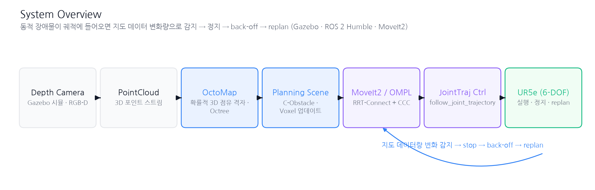
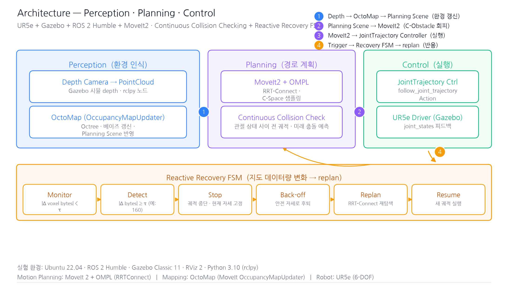
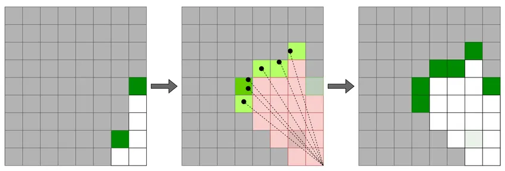
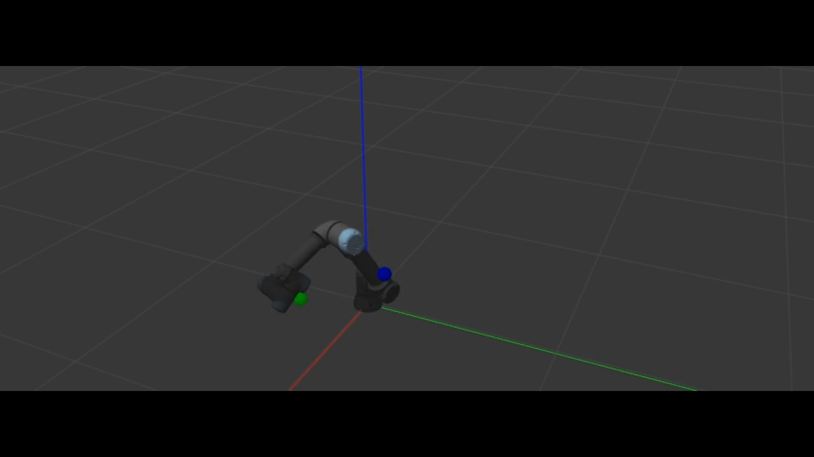
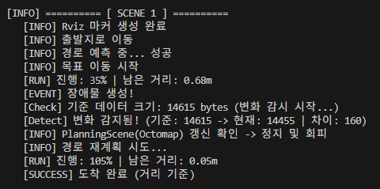
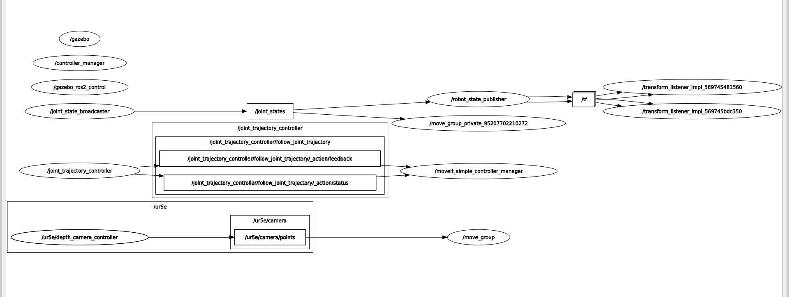
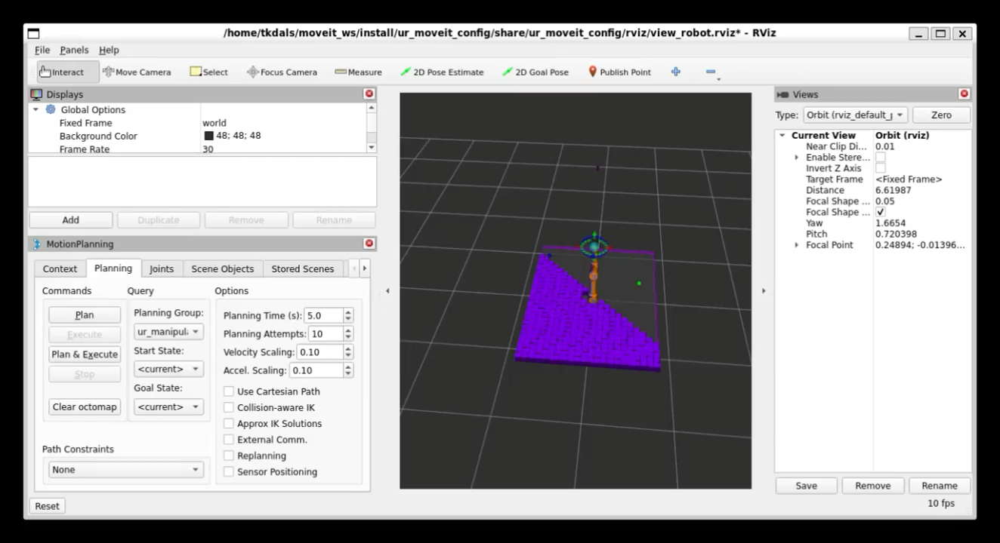

정적 플래너만으로는 실행 중인 궤적에 갑자기 들어오는 동적 장애물을 회피할 수 없다. 실제 UR5e 하드웨어를 다루기 전, Gazebo 시뮬레이션 위에서 반응형 재계획 파이프라인의 동작을 먼저 검증할 필요가 있었다.
특히 팀프로젝트 특성상 장애물 감지 → 정지 → 후퇴 → 재계획 → 재개가 별도 인식기 학습 없이도 안정적으로 트리거되도록 설계 자체를 단순화해야 했다.


* OctoMap 업데이트 원리 — depth ray를 따라 통과한 셀은 free, 끝점 셀은 occupied로 확률 갱신. 미관측 영역은 unknown 상태로 유지.



Gazebo 상 UR5e에서 Perception–Planning–Control–Recovery FSM 4단이 결합된 반응형 리플래닝을 end-to-end로 동작시켰다. 지도 데이터량 변화(bytes-diff, τ ≈ 160)만으로도 동적 장애물 진입 → 즉시 정지 → 후퇴 → 재계획 → 재개가 별도 인식기 없이 트리거되는 것을 로그·RViz로 확인하였다 (예: 14615 → 14455 (Δ160) 감지 → replan SUCCESS).
5회 반복 라운드 기준 3/5 성공(약 70%), 팀 자체 평가 자율 동작 완성도 약 86% 수준으로 기록되었다. 한계로는 (1) bytes-diff 임계값이 장면 구성에 민감해 튜닝이 필요하고, (2) 실기 UR5e·실기 depth sensor 이식은 다음 단계 과제로 남았다.
